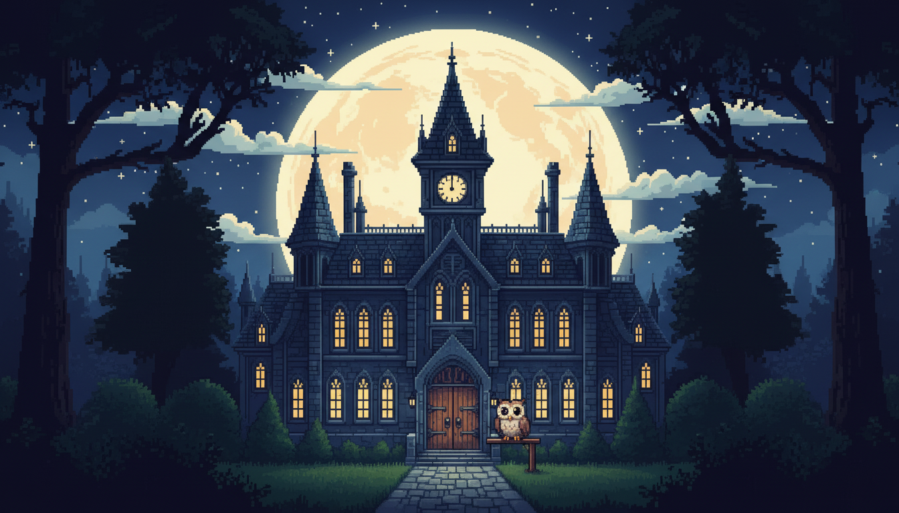

Alle drei Pakete jetzt erhältlich · 3.000 Wörter · 120 Cluster · 37 Lektionen
Français
Das Französisch, das dir wirklich begegnet — in der Reihenfolge, in der es dir begegnet.
Hören · Lesen · Wiederholen · Bewerten · Kämpfen
Du beginnst mit Begrüßungen und den Menschen vor dir. Tausend Wörter später liest du über Arbeit, Geld, Recht und die Nachrichten. Metropolitanes Französisch, ausgewählt danach, wie oft es dir wirklich begegnet.
Französisch, komplett auf Deutsch
Kein Umweg über eine dritte Sprache. Du lernst Französisch aus dem Deutschen heraus — so, wie du es aus einem Lehrbuch gewohnt bist, nur dass es zurückkämpft.
Bei den meisten Vokabeltrainern ist Englisch die Brücke: Du liest die französische Karte, und die Erklärung darunter steht auf Englisch. Bei French Core nicht. Alle 1.000 Karten tragen ihre deutsche Übersetzung und ihre deutschen Anmerkungen — Genus, Plural, Konjugationstyp, falsche Freunde, Registerhinweise. Alle 20 Referenzlektionen gibt es als vollständige deutsche Fassung. Und die Oberfläche des Spiels selbst spricht Deutsch.
- Jede Karte — Übersetzung und Anmerkungen auf Deutsch, nicht maschinell übertragen, sondern für den Karten-Rahmen geschrieben.
- Jeder Beispielsatz — mit deutscher Übersetzung, alle 1.000.
- Alle 20 Lektionen — deutsche Geschwisterseiten, von der Aussprache bis zum Subjonctif.
- Die Oberfläche — Menüs, Meister, Bossfights: auf Deutsch. Auch Englisch, Japanisch und Spanisch stehen bereit.
Dieselbe Karte, viermal. Du stellst deine Sprache einmal ein, und das ganze Paket folgt.
Von der Begrüßung zu den Nachrichten
Bonne continuation — mach weiter so.
French Core ist ein Weg hinein, in fünf Stufen gegangen. Du beginnst da, wo alle beginnen: Begrüßungen, die Menschen vor dir, der Körper, die ersten Verben, Essen, Zahlen, die Uhr. Dann weitet sich der Tag — Aufwachen, die Stadt, der Markt, der Kalender, die Menschen, die dir am nächsten stehen. In der fünften Stufe liest du über Verwaltung und Recht, Medien, digitales Leben, Feste und die feinen Schattierungen, die joli von magnifique trennen.
Jedes Wort stammt aus Häufigkeitsdaten von Untertitel-Korpora — das Französisch, das dir in Film, Fernsehen und Gespräch wirklich ans Ohr kommt, gewichtet nach dem, was für das Verstehen am meisten zählt. Die Grammatik kommt Stufe für Stufe hinzu, und die Beispielsätze bleiben im Rahmen dessen, was du schon gelernt hast — nichts auf einer Karte läuft dir davon. Wenn du Core abgeschlossen hast, hast du über 7.000 Wörter Französisch im Kontext gelesen.
Erster Kontakt, Familie, der Körper, Grundverben, Essen, Zählen, die Uhr.
Aufwachen, in der Stadt, der Markt, der Kalender, enge Bande, Alltag.
Sich fertig machen, zu Hause, Wetter, Läden und Geld, Stimmungen, Vergangenheit.
Arbeit, Reisen, Schule, die wilde Welt, Geist und Meinung, Charakter.
Verwaltung und Recht, Medien und Kunst, digitales Leben, Feste, große Ideen, feine Nuancen.
Fünf Stufen, vierzig Cluster
Jedes Cluster umfasst 25 Karten und endet in einem Bossfight. Nichts ist versteckt — die vollständige Liste steht auf der Wortlisten-Seite, frei lesbar vor dem Kauf.
Core: 5 Stufen · 40 Cluster · 1.000 Karten20 ReferenzlektionenA1–A2-Grundlage
Pareto 1 und Pareto 2 führen dieselbe Karte durch die Stufen 6–15 — weitere 80 Cluster, 2.000 Wörter und 17 zusätzliche Referenzlektionen. Beide sind jetzt erhältlich.
Zunehmend anspruchsvoller
Die Beispielsätze werden Stufe für Stufe komplexer — und benutzen nie Grammatik, die du noch nicht kennst.
- J'ai deux frères et une sœur.Ich habe zwei Brüder und eine Schwester.
- Le week-end je cours, mais le matin je marche.Am Wochenende renne ich, aber morgens gehe ich.
- Elle couche son fils chaque soir à huit heures.Sie bringt ihren Sohn jeden Abend um acht Uhr ins Bett.
- Il pleuvait beaucoup ; ainsi, nous sommes restés à la maison.Es regnete viel; so sind wir zu Hause geblieben.
- Pourriez-vous m'expliquer pourquoi vous êtes encore en retard aujourd'hui ?Könnten Sie mir erklären, warum Sie heute schon wieder zu spät sind?
le · la, in Farbe
Jedes Substantiv trägt seinen Artikel, farblich nach Genus codiert — so lernst du das Genus mit dem Wort statt hinterher. Tippe auf eine Karte, um sie umzudrehen.
An der Élision verlieren die meisten Lernenden das Genus: Vor einem Vokal fallen le und la beide zu l' zusammen, und der Hinweis verschwindet. FlashBoss behält die Farbe unter dem Apostroph, damit l'ami auf einen Blick maskulin und l'eau feminin liest. Die Wörter mit h aspiré, die sich der Elision verweigern — le héros, la honte —, bekommen ihre eigene Lektion.
Zwanzig Lektionen, der Reihe nach
Eine Referenzlektion schaltet genau an der Karte frei, an der du sie zuerst brauchst, und bleibt danach verfügbar. Cores zwanzig — und die siebzehn aus Pareto 1 und Pareto 2 — sind alle auf der Lektionen-Seite frei lesbar, auf Deutsch.
- 01Französische AusspracheVokale, die Nasale, die stummen Endungen und die CaReFuL-Konsonanten, die am Wortende überleben.
- 03Tu und vousWer was bekommt, warum vous immer die sichere Eröffnung ist, und was on peut se tutoyer bedeutet, wenn es dir jemand anbietet.
- 06Il y a & UhrzeitDie zwei Strukturen, die du brauchst, bevor du mit irgendwem irgendetwas verabreden kannst.
- 08Liaison & ÉlisionWarum l'hôtel den Vokal verliert und aux hôtels ein [z] dazugewinnt.
- 12Wörter mit h aspiréDie kurze, geschlossene Liste, bei der das stumme h die Elision trotzdem blockiert: la honte, niemals l'honte.
- 13Avoir oder être?Welches Hilfsverb das passé composé nimmt — und die Verben, die auf être bestehen.
- 14Est — ein HomographEine Schreibung, zwei Wörter, zwei Aussprachen: il est [ɛ] gegen l'est [ɛst].
- 17Einstieg in den SubjonctifDer Modus, den das Deutsche im Konjunktiv noch kennt — hier genau da, wo die Karten ihn zu brauchen beginnen.
Außerdem enthalten: eine Karte lesen, das Präsens, die Verneinung, der Impératif, futur proche, passé composé, reflexive Verben, imparfait, conditionnel présent, futur simple, héros gegen héroïne — und eine Abschlusslektion darüber, wie es weitergeht.
Die Wörter, die dir bekannt vorkommen
Französisch teilt tausende Wörter mit dem Englischen und dem Deutschen — und einige davon lügen dich an. Die Karten sagen es dazu. Zum Umdrehen tippen.
Das Pareto-Prinzip
3 Pakete. 10 % des französischen Wortschatzes für 90 % der französischen Anwendungsfälle. Alle drei sind jetzt erhältlich.
Vom ersten Kontakt bis zur Zugehörigkeit, in fünf Stufen, mit zwanzig Referenzlektionen. Der Weg hinein.
jetzt erhältlichDie nächsten tausend — Alltagsfranzösisch im Tempo, und das lockere gesprochene Register. Setzt Core voraus.
jetzt erhältlichDer gebildete Standard: förmliches Register, strukturierte Argumentation, die Presse. Setzt Pareto 1 voraus.
jetzt erhältlichAuf Steam: French Core · French Pareto 1 · French Pareto 2 — jedes setzt das vorige voraus.
Karteikarten als integriertes System
- Fibonacci-SRS
- Bewerte jede Karte mit 0–5. Je besser du ein Wort kennst, desto länger dauert es, bis es wiederkommt — Spaced Repetition auf Fibonacci-Intervallen.
- Bossfights
- Jedes der 120 Cluster ist durch ein Duell gesperrt, das du nur gewinnst, wenn du dich deinen schwierigsten Wörtern stellst und sie überwindest.
- Abschluss
- Besiege ein Cluster, und seine Karten verlassen dein tägliches Deck für immer. Das Deck wird kleiner, während du lernst.
- Sprachausgabe
- Klares französisches Piper-Text-to-Speech auf jedem Zielwort und jedem Beispielsatz — die Stimme siwis (fr_FR), metropolitanes Französisch. Es ist Synthese, keine Aufnahme einer sprechenden Person.
- Deine Sprache
- Alle 3.000 Karten tragen ihre Übersetzung und ihre Anmerkungen auf Deutsch, Spanisch, Japanisch und vereinfachtem Chinesisch ebenso wie auf Englisch, und jede Referenzlektion hat Geschwisterseiten in denselben vier Sprachen. Die Oberfläche spricht alle fünf. Französisch ist ohne ein Wort Englisch vollständig spielbar.
- Genus auf einen Blick
- Blau für le, magenta für la, auf jedem Substantiv — und die Farbe überlebt die Elision zu l'.
- Häufigkeit
- Die Wortliste ist aus Häufigkeitsdaten von Untertitel-Korpora gebaut — das Französisch, das du wirklich hörst, zuerst.
- Lektionen
- Siebenunddreißig Referenzlektionen aus den drei Paketen erscheinen genau an der Stelle der Abfolge, an der sie freischalten, was du als Nächstes liest.
Fragen
Was Leute vor dem Kauf wissen wollen.
Kann ich den Kurs auf Deutsch spielen?
Vollständig. Alle 3.000 Karten tragen ihre deutsche Übersetzung und ihre deutschen Anmerkungen, jeder Beispielsatz hat seine deutsche Übersetzung, jede Referenzlektion gibt es als deutsche Fassung, und die Oberfläche des Spiels ist auf Deutsch. Du brauchst kein Englisch. Dasselbe gilt für Spanisch, Japanisch und vereinfachtes Chinesisch.
Welches Französisch ist das?
Metropolitanes Französisch — das Französisch Frankreichs — von der ersten bis zur letzten Karte, im Wortschatz, in den Beispielsätzen und in der Stimme.
Brauche ich noch etwas, um es zu spielen?
Ja. French Core ist ein DLC für das FlashBoss-Grundspiel, du brauchst also auch das Grundspiel. Pareto 1 setzt Core voraus, Pareto 2 setzt Pareto 1 voraus — die Pakete bauen der Reihe nach aufeinander auf. Alles andere — die Lektionen, die Sprachausgabe, die Bossfights — steckt im Paket.
Ist die Sprachausgabe von einer muttersprachlichen Person aufgenommen?
Nein, und wir behaupten nichts anderes. Jedes Zielwort und jeder Beispielsatz wird von einer neuronalen Text-to-Speech-Stimme gesprochen — der Piper-Stimme siwis (fr_FR), trainiert auf einem Datensatz aus Frankreich. Sie ist klar und gleichmäßig, und sie ist Synthese, kein Mensch.
Auf welches Niveau bringt mich Core?
Auf eine A1–A2-Grundlage: 1.000 hochfrequente Wörter und zwanzig Grammatiklektionen zu présent, passé composé, imparfait, conditionnel und futur, dazu ein Einstieg in den Subjonctif. Am Ende kannst du einfaches Französisch lesen und einem A2-Kurs folgen — und hast unterwegs über 7.000 Wörter Französisch im Kontext gelesen.
Was ist mit Pareto 1 und Pareto 2?
Beide sind jetzt erhältlich — je 1.000 Wörter. Pareto 1 baut auf Core auf, mit den nächsten tausend hochfrequenten Wörtern und dem lockeren gesprochenen Register; Pareto 2 greift nach dem gebildeten Standard: förmliches Register, strukturierte Argumentation, die Presse. Pareto 1 setzt Core voraus, Pareto 2 setzt Pareto 1 voraus.
Kann ich die Wörter vor dem Kauf sehen?
Alle. Die kompletten Wortlisten zu Core, Pareto 1 und Pareto 2 stehen auf der Wortlisten-Seite, und alle siebenunddreißig Referenzlektionen auf der Lektionen-Seite — kostenlos, druckbar, ohne Konto.
Gibt es eine Demo?
Es gibt einen spielbaren Bossfight im Browser, falls du wissen willst, wie sich der Kampf anfühlt, bevor du dich festlegst: Demo testen.
Fang mit bonjour an.
Tausend Wörter, vierzig Bossfights und zwanzig Lektionen liegen zwischen dir und einer französischen Zeitung.
oder lies zuerst die Wortliste und die Lektionen — beide kostenlos.